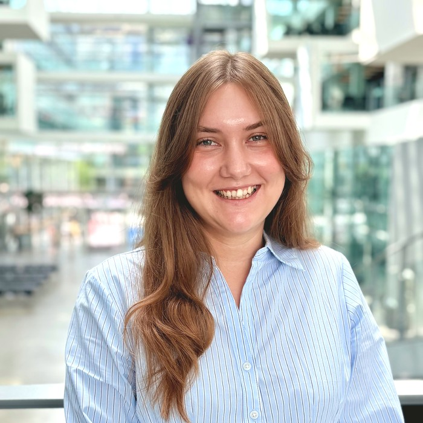

{{ caseTitle }}
{{ cur.sub }}
{{ cur.intro }}
[Image: {{ im.label }}]
{{ b.h }}
{{ b.t }}
{{ b.quote }}
[Image: {{ im.label }}]
[Image: {{ im.label }}]
{{ b.h }}
{{ b.t }}
{{ b.quote }}
[Image: {{ im.label }}]
{{ c.t }}
{{ c.d }}
Hi I’m Louise
UI/UX Designer. Recent graduate of the IT University of Copenhagen. I create aesthetics that support usability.

Selected UI/UX projects
Visual, service & motion
A Little Background
Get to know me
I have a strong visual foundation from my bachelor’s in Communication Design at Design School Kolding,
and technical depth from my master’s in Digital Design and Interactive Technologies at the IT University of Copenhagen.
Experience
Education
Get in touch!
{{ cur.sub }}
{{ cur.intro }}
{{ b.t }}
{{ b.quote }}
{{ b.t }}
{{ b.quote }}
{{ c.d }}
{{ cur.sub }}
{{ frIntro }}
{{ it.t }}
{{ st.t }}
{{ pt.t }}
{{ it.cap }}